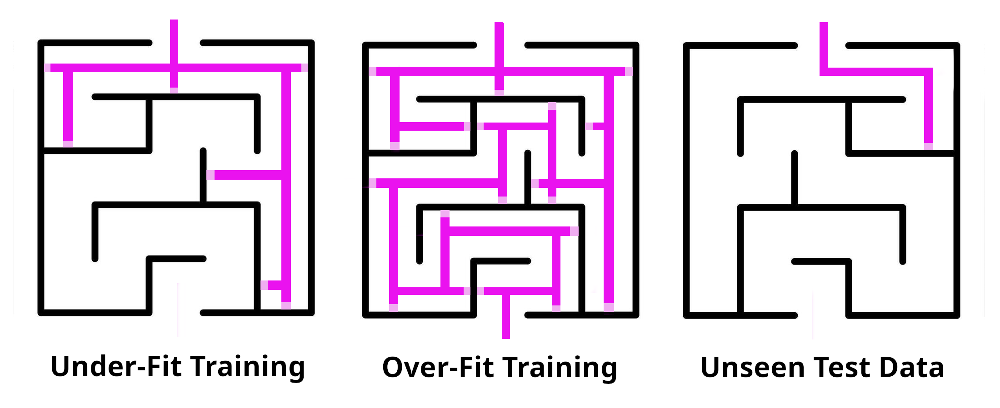
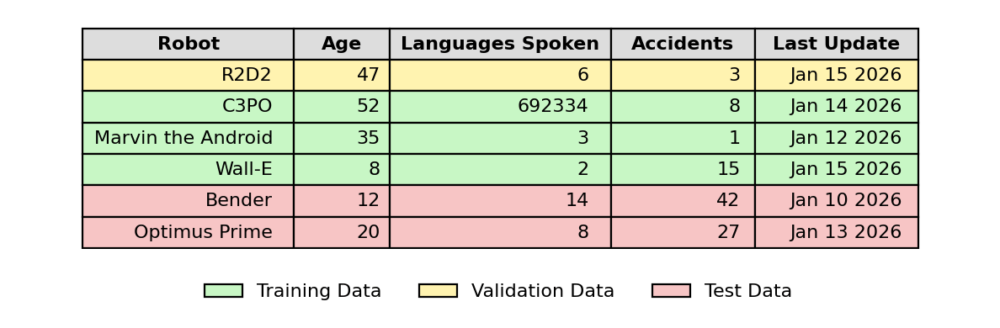

Understanding How Machines Actually Learn

What Exactly Is Machine Learning?
Machines such as computers cannot learn information in the same sense that a human brain does. There is no actual understanding, intuition, or knowledge of information; only mathematical processes. Machine learning is widely used for practical tasks that you’re most likely already familiar with, such as determining spam emails, detecting credit card fraud, the weather forecasts based on historical data, the content suggestions on your favorite streaming services, and the facial recognition on your cell phone.
How Does A Machine Actually Learn From Data?
| “Compute…” | “Processing…Beep Boop” |
-images generated using ChatGPT5, GIMP
When someone refers to ‘Machine Learning’ they are referring to a mathematical ‘model’, or set of equations, used to predict an outcome based on previous ‘training’ data. The fundamental process works like this:
Data Preparation
These processes for machine learning are performed by taking a ‘cleaned’ data-set in the format of a table with columns and rows, then splitting it into 2 parts: one for training, and one for testing. The ‘cleaning’ of data refers to the uniformity of the table values, ensuring that each column contains the same data-types, each row has the same amount of columns, unusual characters and empty cells are handled in a relevant way, which is the decision of the data-scientist working with the specific data set. In data science a row is called an ‘example’ and a column is a ‘feature’ of that example, with the individual cells being the ‘observations’. There are a number of method used to clean, ‘preprocess’, and ‘encode’ data to improve the performance and help facilitate the best outcome for the model.
The ‘Golden Rule of Machine Learning’ is to never allow any training processes to cross-pollinate and access the test data. This will render all results untrustworthy with overly-optimistic scores as they’ve had a ‘peek’ at the test.

Model Training and Optimization
After the prediction is complete it is scored based on how accurate it was. The degree of inaccuracy is considered the amount of ‘error’. The computer then runs through thousands or millions of iterations while adjusting the initial mathematical model’s parameters to reduce the amount of error. This process is called a ‘loss function’ within the process of ‘fitting’ a model.

There are many different machine learning models and loss functions, and different models and loss functions are applied to different problems when asking or exploring different questions. The model eventually settles when it has found the optimal settings with the lowest error. Think of this as a chef cooking a meal and constantly tasting then adjusting the salt and spices until the ratios are just right. Another analogy would be to think of a toddler learning to walk: it starts with clumsy, random movements, stumbling and falling. Each time it falls, it adjusts its weight distribution and stride slightly. After numerous of attempts, it finds the optimal balance and coordination where it moves smoothly with minimal wobbling. The ‘error’ is each stumble, and the model keeps tweaking until it reaches that sweet spot of stability.
Avoiding Overfitting and Underfitting
There is also a risk of training the model too poorly or too well on the training data. This is called ‘under-fitting’ and ‘over-fitting’. The problem with this is that the training data is only a sample of the data set and the model needs to be able to perform well on new unseen data, not just memorize patterns in the training data. This can be related to studying for a test. If you happen to get an answer sheet and just memorize the answers you will certainly do well on that test, but if the questions and answers are revised for the same test your success will be based on random luck without having an actual understanding of the material.

Or say that you memorize a maze so well that you can be blindfolded and run through the maze without hitting any obstacles or running into a wall. This means your knowledge would be ‘over-fit’ to that specific maze. Now if you try to blindly run through a new maze using the same memorization of the first one, you’ll almost definitely ‘run into’ some obstacles. The same idea could be applied if you haphazardly memorized the first maze and then tried to blindly run through - you’ll likely ‘run into’ obstacles later in the first maze, as well as all subsequent attempts at trying to navigate new mazes as well. In the latter example you would have ‘under-fit’ your training on the initial maze.
Cross-Validation for Better Model Performance
Because the size of the training data is limited, an optimization technique called ‘cross-validation’ is often used. This effectively splits the training data again into training and ‘validation’ parts, where the model is trained on the training part and scored on the validation part before applied to the testing section of data.

Cross validation is performed a chosen number of times, specified by ‘k’, with different splits of the training data. The ‘k’ defines the number of crosses and for each ‘cross’ in the cross-validation, the training data is split again using different parts for training and for validation. This is called ‘k-fold’ validation and greatly helps to optimize the model and reduce error for the best performance on new, unseen data.
Limitations and Reality
The efficacy of machine learning is based on the ability of the model to optimize for data for which it was not trained on and comes with an inherent set of limitations. The models are fundamentally pattern-matchers: they excel when new data resembles their training data, but can fail unpredictably when given new situations. A spam filter may not be up-to-date with the latest tactics and phishing methods, or may produce ‘False Negatives’ by incorrectly flagging non-spam emails. Historical weather data may not account for overall climate change and have difficulty being able to adapt and predict today’s weather based on older data. A facial recognition system may be primarily trained on one demographic and fail to recognize patterns when presented with a different one, or be easily fooled by visual tricks.

This also presents the fundamental limitation of machine learning, which is the data itself. Garbage in equals garbage out. Data can be messy, inaccurate, and biased, which leads to poor, misleading, or completely incorrect results. So despite its power, machine learning is a tool and not a replacement for human judgment. Machines don’t truly ‘learn’ or ‘understand’—they find statistical patterns.